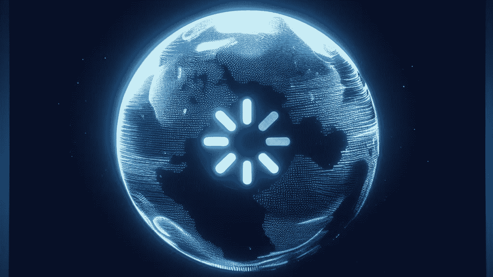
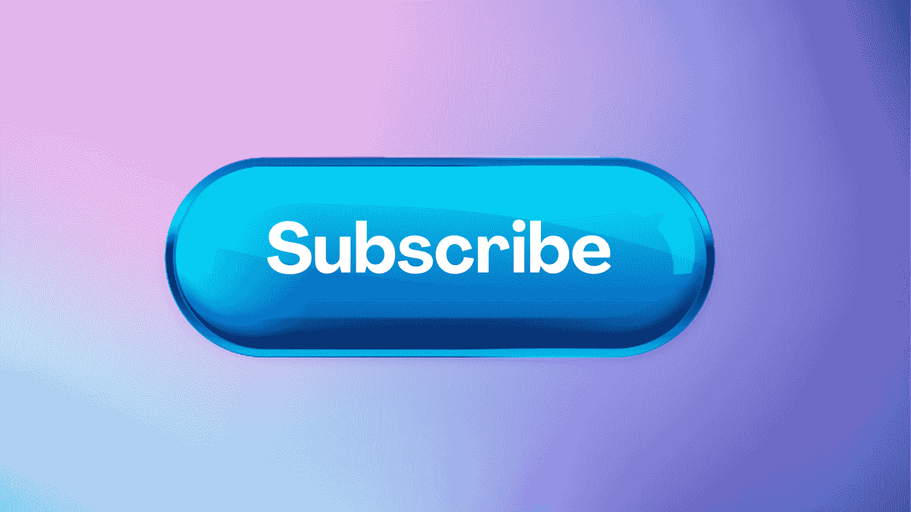

Disney Plus Downfall: What Went Wrong with the Streaming Giant?
In the age of digital entertainment, streaming platforms like Disney Plus have taken the world by storm. However, beneath the facade of success and a vast library of beloved content, there lies a tale of challenges, missteps, and the pursuit of profitability. In this article, we will delve into the intricacies of Disney Plus, exploring its downfall, bad movies, and its battle with competitors like HBO Max. So, grab your popcorn, and let's dive into the fascinating world of Disney Plus.
Table of contents
- Introduction
- Disney Plus: A Brief Overview
- The Rise of Disney Plus
- The Downfall Begins
- The Competition: HBO Max
- Disney Plus Bad Movies: A Growing Concern
- User Experience: A Key Factor
- Content Wars: Disney Plus vs. Amazon Prime Video
- The Quest for Profitability
- Disney Plus: The Future Outlook
- Conclusion
- FAQs
Introduction
Disney Plus, the streaming platform that brought the magic of Disney into our homes, has seen remarkable success since its launch. However, as with any empire, challenges and weaknesses emerge over time. In this article, we will explore the factors contributing to Disney Plus's downfall, its struggle against competitors like HBO Max, and the growing concern of bad movies in its library.
Disney Plus: A Brief Overview
Before we delve into the platform's issues, let's take a moment to understand what Disney Plus is all about. Disney Plus, also known as Disney+, is a subscription-based streaming service that offers a vast collection of Disney, Pixar, Marvel, Star Wars, and National Geographic content.

The Rise of Disney Plus
Disney Plus entered the streaming arena in November 2019, and it took the industry by storm. With its impressive content library and the allure of exclusive shows like "The Mandalorian," it quickly gained millions of subscribers. The service seemed to fulfill the dreams of Disney fans, offering a one-stop-shop for all things Disney.
The Downfall Begins
Content Quality Issues
However, as the initial excitement waned, subscribers began to notice a decline in content quality. While "The Mandalorian" and other marquee originals stood out, some of Disney Plus's new releases struggled to capture the same magic. This raised questions about the platform's ability to consistently deliver high-quality content.
Viewers began to encounter movies and series that fell short of expectations. Films like "Artemis Fowl" and "The Nutcracker and the Four Realms" were heavily criticized for their lackluster storytelling and execution. In the world of streaming, where content is king, such missteps can be costly.
Technical Glitches
Disney Plus also faced technical issues during its launch. Users reported frequent outages and buffering problems, which tarnished the platform's reputation. Streaming services must provide a seamless experience, and these early hiccups left some subscribers frustrated.
The Competition: HBO Max
HBO Max's Strengths
While Disney Plus was dealing with its issues, HBO Max emerged as a formidable competitor. HBO Max leveraged its existing library of critically acclaimed series and films, such as "Game of Thrones" and "Westworld," to attract a dedicated audience. The promise of fresh content from the WarnerMedia stable further bolstered its appeal.
Challenges for Disney Plus
Disney Plus struggled to keep pace with HBO Max's content diversity. To compete effectively, Disney had to invest heavily in producing new content across its various franchises. This battle for exclusive, high-quality content became a hallmark of the streaming wars, and Disney found itself embroiled in the fight.
Disney Plus Bad Movies: A Growing Concern
One issue that Disney Plus faced was the presence of poorly received movies in its catalog. While the platform boasted many beloved classics, some newer additions failed to meet the mark. These cinematic disappointments, when prominently displayed on the platform, undermined its reputation.
User Experience: A Key Factor
User Interface
Another challenge Disney Plus grappled with was its user interface. Subscribers criticized it for being cluttered and challenging to navigate. A smooth and intuitive interface is essential for retaining viewers and ensuring they can easily access the content they love. Disney Plus had to address these usability concerns to improve the overall user experience.
Customer Support
In addition to interface issues, Disney Plus received negative feedback regarding its customer support. Subscribers expressed frustration over long response times and difficulty resolving technical problems. Effective customer support is crucial in the highly competitive streaming landscape, where subscribers have numerous alternatives at their fingertips.
Content Wars: Disney Plus vs. Amazon Prime Video
Disney Plus faced another formidable rival in Amazon Prime Video. The battle for subscribers intensified as both platforms expanded their offerings. Amazon Prime Video's vast content library, including critically acclaimed originals like "The Marvelous Mrs. Maisel," posed a significant challenge to Disney Plus's quest for dominance.
The Look for Profitability
Subscribers vs. Revenue
While Disney Plus amassed millions of subscribers, profitability remained a challenge. The company had to strike a delicate balance between content investments and revenue generation. The race to secure as many subscribers as possible often led to costly content acquisitions and productions.
International Expansion
Disney Plus sought growth through international expansion. However, this endeavor posed unique challenges, such as localization and competition with established streaming services in new markets. Achieving global success required strategic planning and significant resources.
Disney Plus: The Future Outlook
As Disney Plus navigates these challenges, the future remains uncertain. The streaming giant continues to evolve and adapt to changing consumer preferences. Key strategies include:
- Content Quality Improvement: Disney Plus has redoubled its efforts to produce high-quality original content, addressing concerns about bad movies.
- Enhanced User Experience: The platform is working to revamp its user interface and streamline customer support to offer a better overall experience.
- Global Expansion: Disney Plus is aggressively expanding internationally, hoping to tap into untapped markets and bolster its subscriber base.
- Strategic Partnerships: Collaborations with other media companies and franchises aim to strengthen Disney Plus's content portfolio and attract a broader audience.
- Pricing and Bundle Options: Exploring different pricing tiers and bundle offerings allows Disney Plus to target various market segments effectively.
Conclusion
In this exploration of Disney Plus, we've uncovered the ups and downs of this streaming giant. From content quality issues to competition with HBO Max and concerns about bad movies, Disney Plus faces a complex landscape. However, it's essential to remember that the streaming industry is ever-changing, and Disney Plus may yet write a different chapter in its story. As it adapts to the challenges and learns from its mistakes, Disney Plus remains a significant player in the world of digital entertainment.
FAQs
- 1. Why is Disney Plus losing money?
Disney Plus is investing heavily in content and international expansion, impacting short-term profitability. The company is betting on long-term gains and global reach. - 2. What are some of the worst movies on Disney Plus?
While Disney Plus offers many classics, some newer additions like "Artemis Fowl" and "The Nutcracker and the Four Realms" have received poor reviews. However, individual opinions on movies may vary. - 3. How does Disney Plus compare to HBO Max?
Disney Plus and HBO Max compete in content quality and diversity, with HBO Max offering a wide range of original shows and movies. The choice between the two often depends on personal preferences and the desire for specific franchises. - 4. Is Disney Plus struggling to compete with Amazon Prime Video?
Disney Plus and Amazon Prime Video are vying for subscribers, with both platforms expanding their content libraries. The competition is fierce, with each platform offering unique content and features. - 5. What is Disney Plus doing to improve its content quality?
Disney Plus is actively investing in new original content, revising its content acquisition strategies, and addressing issues with poorly received shows and movies. The platform aims to offer a diverse and high-quality content lineup to retain and attract subscribers.